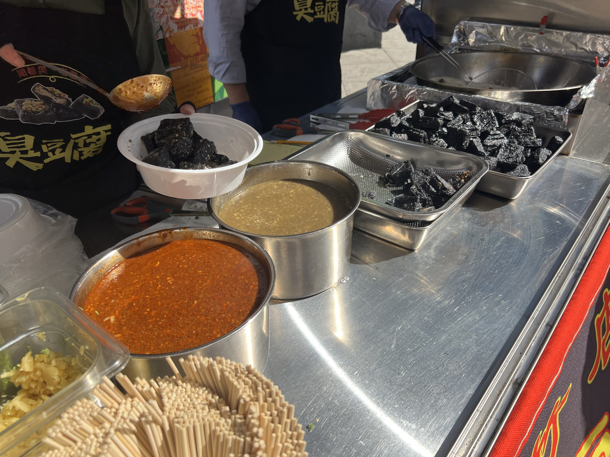

Chinese cuisine is a big business in New York City, yet the sanitary conditions remain a concern in Flushing.


People in New York City love Chinese food. In 2026, there are 2,033 Chinese restaurants in the city, which makes it the largest foreign cuisine in the city.
Based on NYC Department of Health restaurant inspection results, counting only restaurants that received an official inspection letter grade (A, B, or C). Showing top 12 of 90 cuisines.
Flushing in Queens is the location of the largest concentration of Chinese restaurants in the city. However, the discussion around Flushing being a dirty place is ongoing for years around residents.
NYC health-inspection records show that several Flushing restaurants have been temporarily closed in recent years for critical violations, including evidence of mice or live roaches; some restaurant closures elsewhere in Queens have also involved improper sewage disposal.
The city has been aware of this as well. Council Member Sandra Ung based in Flushing also invited NYC Department of Sanitation Commissioner Jessica Tisch to tour Main Street in Flushing in 2024. They discussed sanitation challenges facing the retail corridor, including unlicensed vending and violations of stoop stand regulations.
Food lovers with Chinese background in New York City are still attracted by the variety of Chinese restaurants in Flushing, and always leave a good review on Google Maps. In a data analysis of Google Maps Reviews that only sorted by common Chinese last names, posted on Reddit by user "Cssoph", the top 10 most reviewed Chinese restaurants in Flushing are all rated 4.0 stars or above, with the highest rated restaurant at 4.7 stars.
But that enthusiasm sits next to a worrying gap. The chart below compares Flushing with the rest of New York City on two things: how much attention its Chinese restaurants draw from Chinese reviewers, and how they fare on city health inspections. Flushing's restaurants pull in roughly five times as many reviews from Chinese diners — yet a Grade C is nearly twice as common there as in the rest of the city.
Flushing draws roughly 5× the Chinese-reviewer attention.
1 in 7 Flushing spots carries a Grade C — double the rest of NYC.
Why does one of the city's most beloved food neighborhoods struggle with inspection grades? Part of the answer is density. Downtown Flushing packs hundreds of kitchens into a few blocks around Main Street and Roosevelt Avenue, many of them in older buildings and crowded market spaces where storage, plumbing, and pest control are harder to manage.
A lower grade is not the same as bad food, though. New York's letter grades capture a single inspection on a single day, scoring violations such as improper food temperatures, pests, or plumbing problems. Many restaurants that receive a B or C fix the issues and earn an A on re-inspection. Still, the concentration of Grade C spots in Flushing is real, and it runs higher than in almost any other part of the city.
So where are these restaurants, and how do their grades stack up block by block? The map below plots every graded Chinese restaurant in New York City, colored by its most recent letter grade. Zoom into Flushing and the cluster of red and yellow dots stands out.
The largest cluster of Grade C Chinese restaurants in the city sits in Flushing. The map shows every graded Chinese restaurant, colored by inspection grade. Search an address or click any dot for details.
Still, none of this keeps diners away. Flushing is one of the best places in the city to eat Chinese food, and a bad grade usually doesn't stick, since most restaurants fix the problems and earn their A back. The point isn't that the food is unsafe. It's that the neighborhood New Yorkers love most for Chinese food is also where inspectors find the most problems, and that gap is worth keeping an eye on.